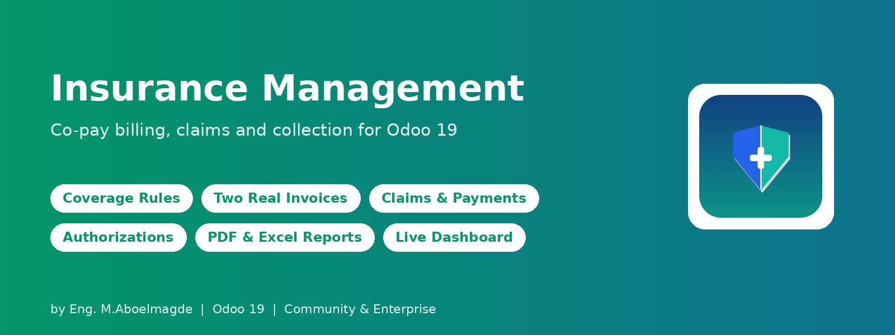
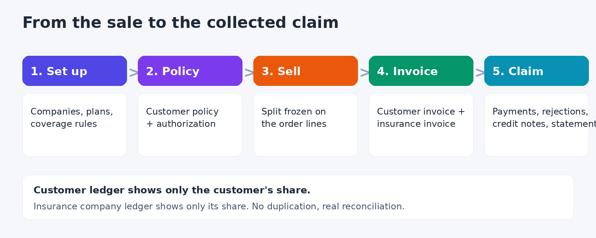
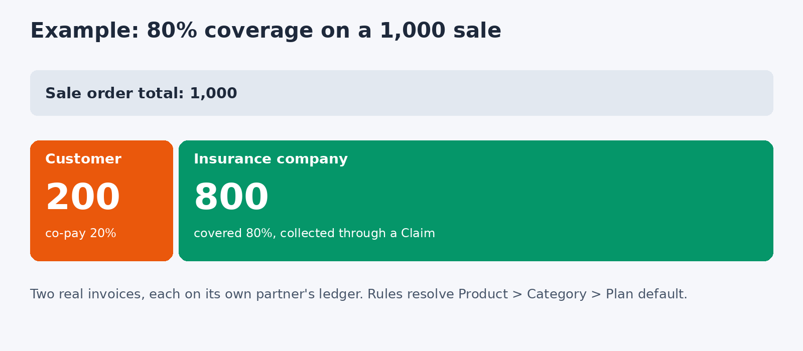
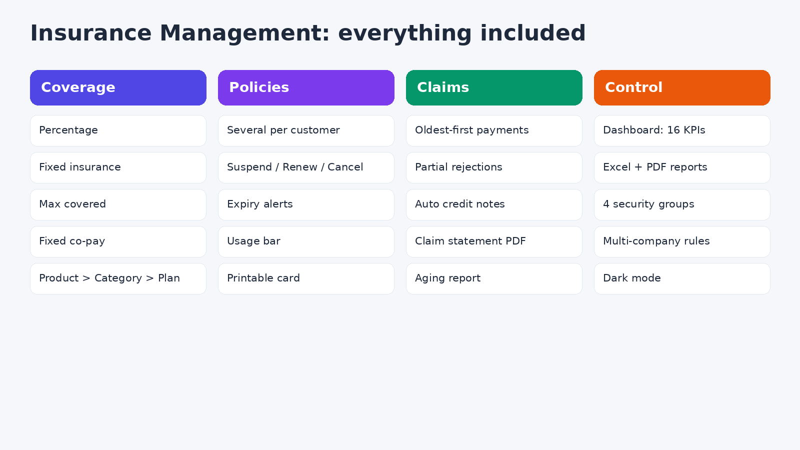

Insurance co-pay billing for Odoo — from the sale, to the invoices, to collecting the claim.
For clinics, pharmacies, labs and any business whose customers are partly paid for by an insurance company. Every insured sale is split between the Customer (co-pay) and the Insurance Company (covered share) by configurable coverage rules — never as a discount — and billed with two real, traceable invoices. The insurance side is then collected through Claims, with payments, rejections, credit notes, reports and a live dashboard.


Multiple plans per insurance company with automatic, editable codes. Percentage, Fixed Insurance, Max Covered and Fixed Co-Pay rules, resolved by Product > Category > Plan default.
Several policies per customer, one primary. Suspend, Reactivate, Renew and Cancel buttons, expiry alerts, a used-coverage bar, automatic daily expiry and a printable policy card.
The split is calculated per order line and frozen at confirmation. The insurer gets its own invoice, booked to the insurance journal's default account, with an Insurance Invoices button on the Sales Order.
Prior-approval workflow with approved amounts, required by plan or by product, and a printable form.
Submit collects the insurer's open invoices. Payments are settled oldest invoice first; the status always follows the real payments. A rejected amount is booked automatically as a credit note (with undo); credit notes issued later can be refreshed; statement PDF included.
Two pages with shared filters: Cards (16 KPIs, recent claims, top patients) and Charts (trend, status, coverage split, aging, collection overview, top companies / plans / products). Click-through, tooltips, light and dark mode.
Claims, Product Coverage and Aging reports as PDF (ReportLab) and Excel, with filters; claim statement, policy card and authorization form as PDF. Arabic text is supported. The reports are completely independent of Odoo's own reports: this module does not use wkhtmltopdf and does not change how any Odoo report is generated.
Odoo 19 with Sales, Invoicing and Contacts. The Python libraries ReportLab and XlsxWriter come with Odoo (a verified copy is bundled as a fallback).
Author: Eng. M.Aboelmagde · License: LGPL-3

Bug-fix updates included. Installation and customization support: Eng. M.Aboelmagde (YouTube: @odoolab).